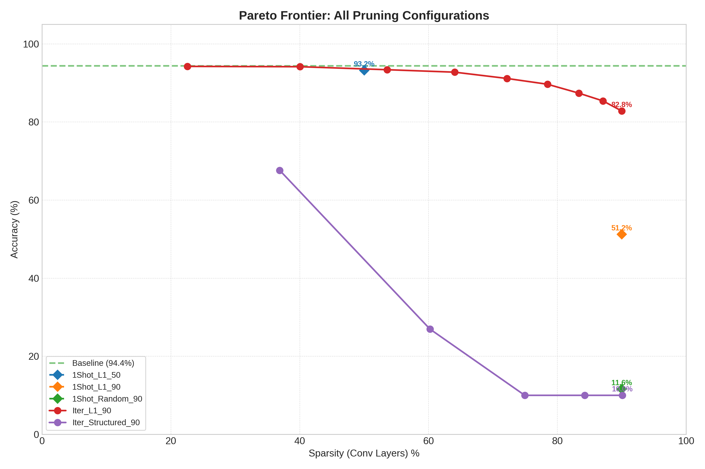
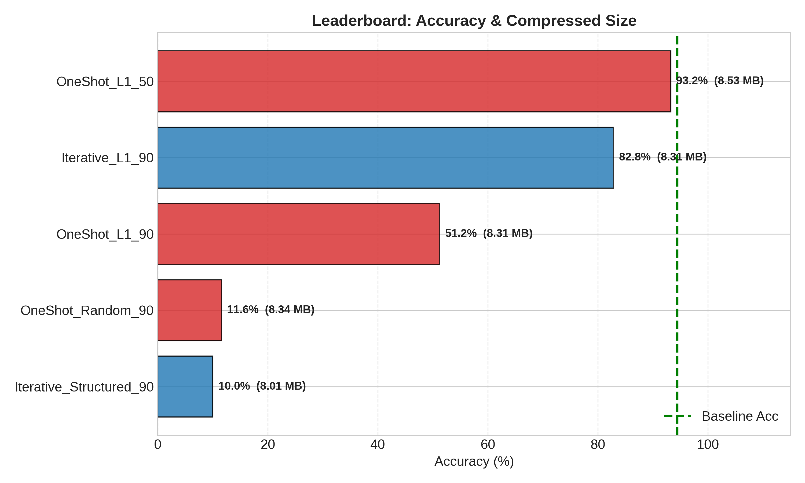
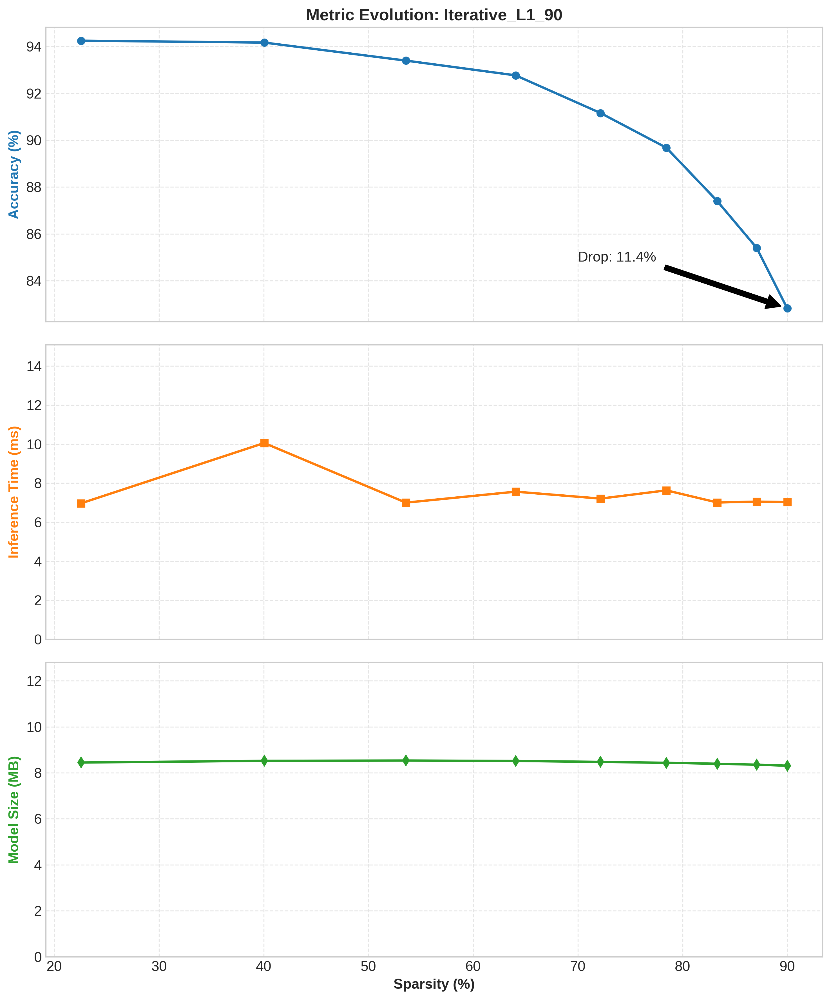
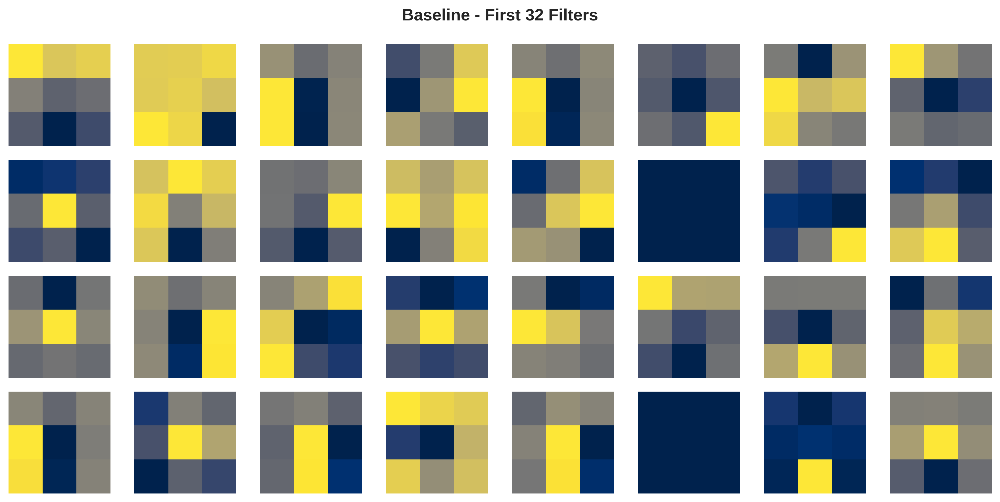
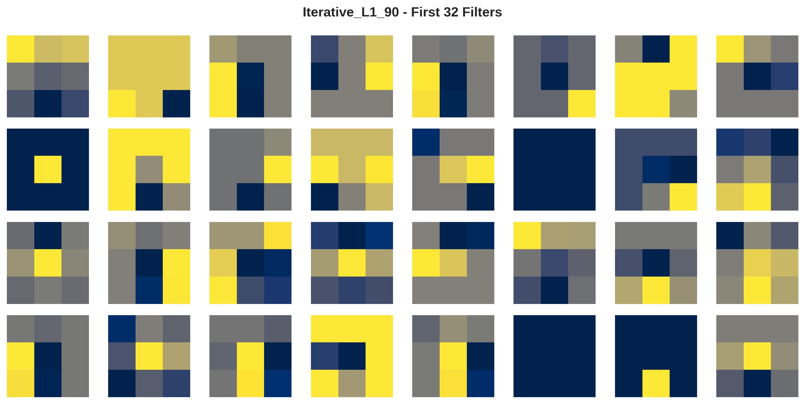
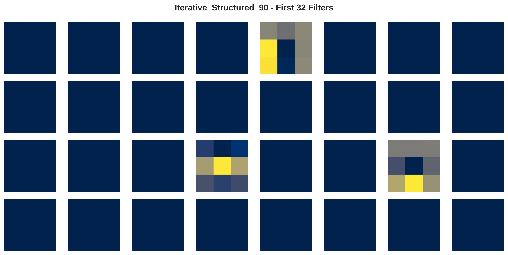
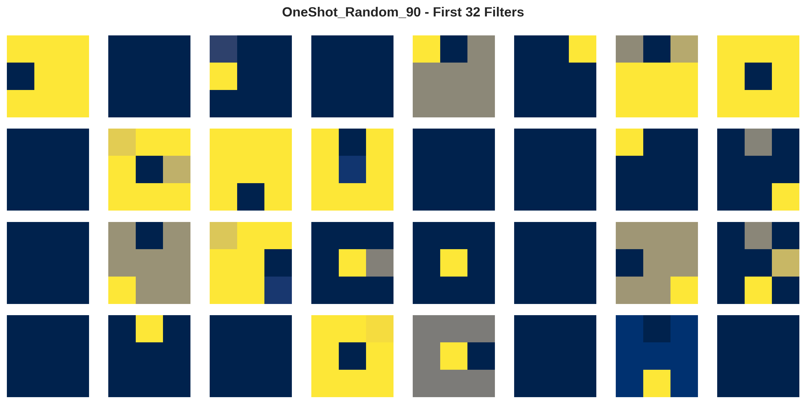

This section details the dataset selection and preprocessing steps used to simulate an industrial defect detection scenario.
The data handling is managed by the torchvision pipeline, utilizing CIFAR-10 as a proxy for industrial object classification.
To simulate a resource-constrained industrial environment (e.g., classifying parts on a conveyor belt), we utilize the CIFAR-10 dataset.
The transform_train and transform_test pipelines prepare the raw images for the MobileNetV2 architecture.
To mimic edge inference conditions, the test loader is configured to simulate batched processing. * batch Size: 64 * Workers: 2
The optimization task utilizes a lightweight convolutional neural network, modified for pruning experiments.
MobileNet_V2_Weights.DEFAULT (ImageNet weights)model.classifier[1]) is replaced to output 10 classes instead of 1000.The core of this project is the run_unified_experiment function, which implements a flexible pruning engine capable of executing distinct strategies defined in experiments_config.
| Strategy | Heuristic | Logic |
|---|---|---|
| Unstructured L1 | Magnitude | Removes individual weights with the smallest absokute value. |
| Structured L2 | Norm | Removes entire channels/filters based on their L2 norm. Reduces matrix dimensions for real speedup but causes higher accuracy loss. |
| Random | Stochastic | Randomly removes weights. Used as a baseline "sanity check" to validate the effectiveness of L1 pruning. |
The evaluation was performed using the best model checkpoint saved based on validation mAP.
X% of weights.The models were evaluated based on three: Sparsity, Top-1 Accuracy, and Inference Time.
| Experiment | Sparsity | Accuracy | Model Size (Gzip) | Inference Time |
|---|---|---|---|---|
| Baseline | 0% | 94.4% | 8.53 MB | 6.90 ms |
| OneShot L1 | 50% | 93.2% | 8.53 MB | 6.78 ms |
| Iterative L1 | 90% | 82.8% | 8.31 MB | 7.03 ms |
| OneShot L1 | 90% | 51.2% | 8.31 MB | 6.85 ms |
| OneShot Random | 90% | 11.6% | 8.34 MB | 6.84 ms |
| Iterative Structured L2 | 90% | 10.0% | 8.01 MB | 6.92 ms |
 
This section details the theoretical reasons behind our experimental findings.
The "Lottery Ticket Hypothesis" suggests that dense networks contain sparse subnetworks that can be trained to high accuracy.
Structured pruning removes entire filters.

Despite removing 90% of the weights, our inference time remained ~7ms.
Observation: Despite removing 90% of parameters, the disk size only dropped by ~0.2 MB.
Explanation: We utilized PyTorch Masking, which zeroes out weights but preserves the original tensor shapes (Dense Format).
To understand what the model actually removed, we visualized the weights of the first convolutional layer (32 filters). This visual evidence explains the drastic difference in accuracy between strategies.
Baseline: The original filters contain rich, dense patterns used for edge and color detection. 
Iterative L1 (90% - 82.8% Acc): The "Swiss Cheese" effect. The L1 algorithm surgically removed individual unimportant pixels (weights) while preserving the high-magnitude structures. This allows the filter to still function, albeit with less fidelity. 
Structured L2 Pruning (90% - 10.0% Acc): The "Blackout". This method killed entire filters (the black squares). Because MobileNetV2 is already compact, killing 90% of the filters destroyed the model's ability to extract features entirely, resulting in random guessing. 
Random Pruning (90% - 11.6% Acc): The "Static". Unlike L1 pruning which preserved structure, random pruning destroyed the coherent patterns necessary for convolution, resulting in noise. 
This project successfully demonstrated that Iterative Unstructured Pruning is the optimal strategy for compressing MobileNetV2 on CIFAR-10, achieving 90% sparsity with only an 11% drop in accuracy.
Key Takeaways: Gradual is Better: The "healing" phase in iterative pruning is critical. One-shot pruning at high sparsity levels causes irreversible brain damage to the model.
Architecture Matters: MobileNetV2 is highly sensitive to Structured Pruning. Unlike VGG or ResNet, it lacks the channel redundancy required to survive the removal of entire filters.
The Hardware Gap: While we achieved theoretical compression (sparsity), realizing actual gains in speed (latency) and storage requires specialized deployment steps (Sparse Formats and Hardware) beyond standard PyTorch masking.